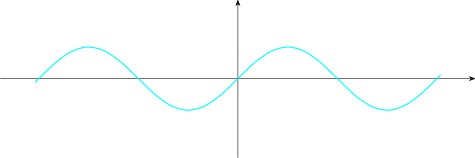
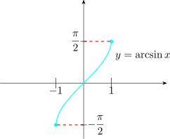
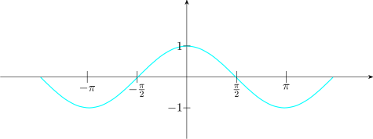
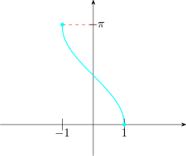

18.1 Domain Restrictions that make Trigonometric Functions One-to-One
Only a one-to-one function can have an inverse, and none of \(\sin x\), \(\cos x\) or \(\tan x\) is one-to-one on the whole of \(\mathbb {R}\) — each repeats its values endlessly. If, however, the domain of each is suitably restricted to an interval on which the function takes every value in its range exactly once, the restricted function is one-to-one and an inverse can be defined.
The restriction chosen is a convention, but it is the same convention everywhere, and it is what fixes the range of the inverse. That range is called the principal value of the inverse function.
Take \(y=\sin x\)

\[D=\bigg \{x:-\dfrac {\pi }{2}\leq x \leq \frac {\pi }{2}, x\in \mathbb {R}\bigg \}\] \[R=\bigg \{y:-1\leq y \leq 1, y\in \mathbb {R}\bigg \}\]

The inverse function of \(\sin x\) on \(-\dfrac {\pi }{2}\leq x\leq \dfrac {\pi }{2}\) is called \(\arcsin x\), also written \(\sin ^{-1}x\). If \(y=\arcsin x\), \[D=\{x:-1\leq x \leq 1, x\in \mathbb {R}\}\] \[R=\bigg \{y:-\dfrac {\pi }{2}\leq y \leq \dfrac {\pi }{2}, y\in \mathbb {R}\bigg \}\]

Note 18.1. The notation \(\sin ^{-1}x\) is unfortunate and causes real confusion. It means the inverse function, not the reciprocal: \(\sin ^{-1}x\neq \dfrac {1}{\sin x}\). The reciprocal is \(\csc x\). Yet \(\sin ^{2}x\) does mean \((\sin x)^{2}\), so the superscript changes meaning between \(2\) and \(-1\). Where there is any risk of doubt, write \(\arcsin x\).
\[y=\cos x\]

\[D=\{x:0\leq x\leq \pi , x\in \mathbb {R}\}\] \[R=\{y:-1\leq y \leq 1, y \in \mathbb {R}\}\]
The inverse is \(\arccos x\), also written \(\cos ^{-1}x\).


\[D=\{x:-1\leq x\leq 1, x\in \mathbb {R}\}\] \[R=\{y:0\leq y \leq \pi , y\in \mathbb {R}\}\]
The restrictions for all six inverse functions are collected here for reference.
| function | domain | range (principal values) |
| \(\arcsin x\) | \(-1\leq x\leq 1\) | \(-\frac {\pi }{2}\leq y\leq \frac {\pi }{2}\) |
| \(\arccos x\) | \(-1\leq x\leq 1\) | \(0\leq y\leq \pi \) |
| \(\arctan x\) | \(x\in \mathbb {R}\) | \(-\frac {\pi }{2}<y<\frac {\pi }{2}\) |
| \(\operatorname {arccot} x\) | \(x\in \mathbb {R}\) | \(0<y<\pi \) |
| \(\operatorname {arcsec} x\) | \(\left |x\right |\geq 1\) | \(0\leq y\leq \pi ,\ y\neq \frac {\pi }{2}\) |
| \(\operatorname {arccsc} x\) | \(\left |x\right |\geq 1\) | \(-\frac {\pi }{2}\leq y\leq \frac {\pi }{2},\ y\neq 0\) |
Questions on this section
Stuck on something here? Ask below and it stays attached to this topic.